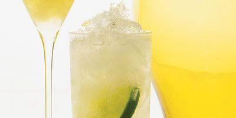

เครื่องดื่ม มักจะเป็นสิ่งที่มนุษย์จัดเตรียมสำหรับดื่ม มีสถานะเป็นของเหลว และมักจะมีน้ำเป็นส่วนประกอบหลัก เครื่องดื่มอาจเป็นปัจจัยในการดำรงชีพ เช่นน้ำ หรือใช้ในด้านอื่น เช่น เหล้าและไวน์ใช้เป็นส่วนประกอบของพิธีกรรม รายชื่อเครื่องดื่มต่าง ๆ เช่น น้ำ น้ำประปา น้ำแร่ น้ำผลไม้ น้ำส้ม น้ำมะนาว น้ำแคร์รอต น้ำฝรั่ง นม นมชง